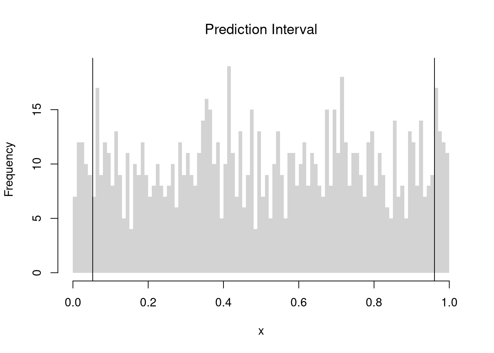

The starting point for hypothesis testing is the Kolmogorov-Smirnov Statistic: the maximum absolute difference between two CDF’s over all sample data \(x \in \{X_1\} \cup \{X_2\}\). \[\begin{eqnarray}
KS &=& \max_{x} |F_{1}(x)- F_{2}(x)|^{p},
\end{eqnarray}\] where \(p\) is an integer (typically 1).
An intuitive alternative is the Cramer-von Mises Statistic: the sum of absolute differences (raised to a power, typically 2) between two CDF’s. \[\begin{eqnarray}
CVM=\sum_{x} |F_{1}(x)- F_{2}(x)|^{p}.
\end{eqnarray}\]
Just as before, you use bootstrapping for hypothesis testing.
twosamples::cvm_test(x1, x2)## Test Stat P-Value ## 2.084253 0.078000
Comparing Multiple Groups.
For multiple groups, we can tests the equality of all distributions (whether at least one group is different). The Kruskal-Wallis test examines [ H_0:; F_1 = F_2 = = F_G H_A:; F_g , ] where \(F_g\) is the continuous distribution of group \(g\). This test does not tell us which group is different.
To conduct the test, first denote individuals \(i=1,...n\) with overall ranks \(r_1,....r_{n}\). Each individual belongs to group \(g=1,...G\), and each group \(g\) has \(n_{g}\) individuals with average rank \(\overline{r}_{g} = \sum_{i} r_{i} /n_{g}\). The Kruskal Wallis statistic is \[\begin{eqnarray}
KW &=& (N-1) \frac{\sum_{g=1}^{G} n_{g}( \overline{r}_{g} - \overline{r} )^2 }{\sum_{i=1}^{N} ( r_{i} - \overline{r} )^2},
\end{eqnarray}\] where \(\overline{r} = \frac{N+1}{2}\) is the grand mean rank.
In the special case with only two groups, \(G=2\), the Kruskal Wallis test reduces to the Mann–Whitney U-test (also known as the ). In this case, we can write the hypotheses in terms of individual outcomes in each group, \(Y_i\) in one group \(Y_j\) in the other; [ H_0: P(Y_i > Y_j)=P(Y_i > Y_i) H_A: P(Y_i > Y_j) P(Y_i > Y_j) ] The corresponding test statistic is \[\begin{eqnarray}
U &=& \min(U_1,U_2) \\
U_g &=& \sum_{i\in g}\sum_{j\in -g}
\Bigl[\mathbf 1(Y_i > Y_j) + \tfrac12\mathbf 1(Y_i = Y_j)\Bigr].
\end{eqnarray}\]
library(AER)data(CASchools)CASchools$stratio <- CASchools$students/CASchools$teachers# Do student/teacher ratio differ for at least 1 county?# Single test of multiple distributionskruskal.test(CASchools$stratio, CASchools$county)## ## Kruskal-Wallis rank sum test## ## data: CASchools$stratio and CASchools$county## Kruskal-Wallis chi-squared = 161.18, df = 44, p-value = 2.831e-15# Multiple pairwise tests# pairwise.wilcox.test(CASchools$stratio, CASchools$county)
16.3 Prediction
Prediction Intervals.
In addition to confidence intervals, we can also compute a prediction interval which estimate the variability of new data rather than a statistic
In this example, we consider a single variable and compute the frequency each value was covered.
x <-runif(1000)# Middle 90% of valuesxq0 <-quantile(x, probs=c(.05,.95))bks <-seq(0,1,by=.01)hist(x, breaks=bks, border=NA,main='Prediction Interval', font.main=1)abline(v=xq0)

paste0('we are 90% confident that the a future data point will be between ', round(xq0[1],2), ' and ', round(xq0[2],2) )## [1] "we are 90% confident that the a future data point will be between 0.05 and 0.96"
In this example, we consider a range for \(y_{i}(x)\) rather than for \(m(x)\). These intervals also take into account the residuals — the variability of individuals around the mean.
# Bivariate Data from USArrestsxy <- USArrests[,c('Murder','UrbanPop')]colnames(xy) <-c('y','x')xy0 <- xy[order(xy$x),]
For a nice overview of different types of intervals, see https://www.jstor.org/stable/2685212. For an in-depth view, see “Statistical Intervals: A Guide for Practitioners and Researchers” or “Statistical Tolerance Regions: Theory, Applications, and Computation”. See https://robjhyndman.com/hyndsight/intervals/ for constructing intervals for future observations in a time-series context. See Davison and Hinkley, chapters 5 and 6 (also Efron and Tibshirani, or Wehrens et al.)